Les courses de la section sont préparées et conduites par des membres bénévoles, formés dans les cours du CAS : 73 chefs de course actifs, chacun avec ses disciplines. En 2026, 11 nouveaux les ont rejoints, signalés en rouge.
Deborah AciernoEscaladeChef de course depuis 2024
VA
Valerio AriuÉtéChef de course depuis 2021
Thomas ArnÉté · HiverChef de course depuis 2017
Walter BaumgartnerSeniors · Hiver · RandonnéeChef de course depuis 2023
FB
Franco BertoniÉté · Seniors · HiverChef de course depuis 2018
EB
Enrica Bianchi NouveauÉté · Hiver · EscaladeChef de course depuis 2026
PC
Pier Carlo BocchiSeniors · RandonnéeChef de course depuis 2025
EB
Elisa BossiEscaladeChef de course depuis 2025
MB
Marco BuckHiverChef de course depuis 2017
Nadir CaduffÉté · HiverChef de course depuis 2017
MC
Milvia CarelliSeniors · RandonnéeChef de course depuis 2023
LC
Loris CarpinetiEscaladeChef de course depuis 2018
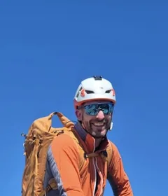
Joel Casada NouveauÉtéChef de course depuis 2026
Fausto CattaliniSeniors · RandonnéeChef de course depuis 2020
SC
Sofia Cereghetti NouveauEscaladeChef de course depuis 2026
Giosiana CodoniÉté · HiverChef de course depuis 2017
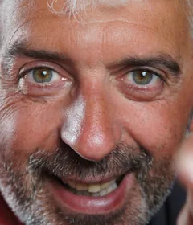
Marco CortiÉté · HiverChef de course depuis 2017
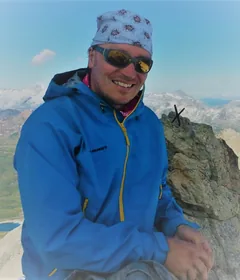
Pierre CrivelliÉté · Secours en montagne · Hiver · Randonnée · EscaladeChef de course depuis 2018
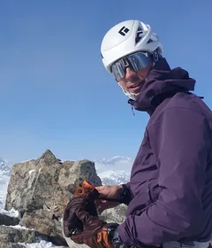
Alessandro DocimoÉté · HiverChef de course depuis 2023
AD
Alessandro DoninelliÉté · Seniors · Hiver · EscaladeChef de course depuis 2017
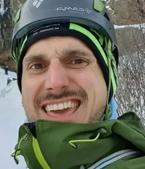
Luigi DossoÉté · EscaladeChef de course depuis 2024
CE
Caterina EisenhutSeniors · RandonnéeChef de course depuis 2019
DE
Daniele EisenhutSeniorsChef de course depuis 2025
Michele FolettiÉté · EscaladeChef de course depuis 2023
Mi sono avvicinato alla montagna verso i 30 anni, frequentando il corso di alpinismo del CAS Ticino. Da allora mi sono formato come monitore G+S di alpinismo e arrampicata. Sono inoltre membro del dicastero sport di montagna e gestisco il magazzino.
Sara Della FreraÉtéChef de course depuis 2020
Giovanni GalliÉté · HiverChef de course depuis 2017
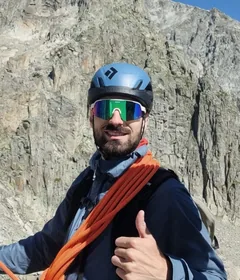
Niccolò GallianiÉtéChef de course depuis 2025
Fabrizio Gastori NouveauSeniors · RandonnéeChef de course depuis 2026
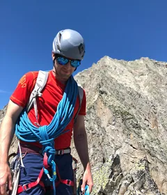
Andrea GhidottiÉté · EscaladeChef de course depuis 2018
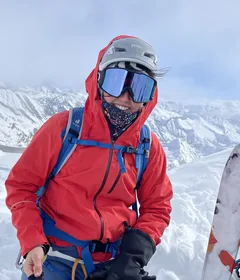
Sarah HolzerHiverChef de course depuis 2025
FI
Filippo IocchiÉtéChef de course depuis 2024
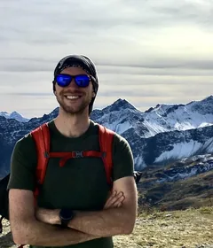
Michel JaegerÉtéChef de course depuis 2020
Geoffroy JollySecours en montagne · HiverChef de course depuis 2024
JK
James Kennedy NouveauSecours en montagne · HiverChef de course depuis 2026
Kilian KnupferÉté · HiverChef de course depuis 2025
Richard KnupferHiverChef de course depuis 2020
SK
Stephan Kotyczka NouveauHiverChef de course depuis 2026
AL
Anna LazzarinettiÉtéChef de course depuis 2025
CL
Christian LorenzettiÉté · HiverChef de course depuis 2018
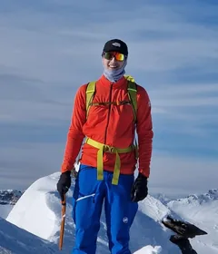
Alfio Maestretti NouveauÉtéChef de course depuis 2026
AM
Alessia MangiaEscaladeChef de course depuis 2024
Michael MargagliottiÉtéChef de course depuis 2025
Nicola MartinoniÉté · Hiver · EscaladeChef de course depuis 2017
HM
Hamos MeneghelliHiverChef de course depuis 2017
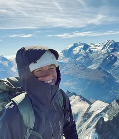
Marta PedriniHiverChef de course depuis 2023
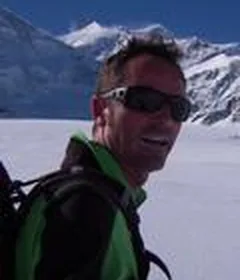
Manuel PellandaÉtéChef de course depuis 2017
Claudio PetriniHiver · EscaladeChef de course depuis 2019
FP
Francesco Piattini NouveauÉté · HiverChef de course depuis 2026
RP
Rico Piazzalunga NouveauÉté · HiverChef de course depuis 2026
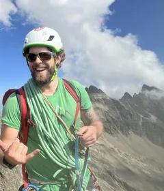
Alessandro PiazzoliÉtéChef de course depuis 2022
GP
Gabriele PonzioÉté · EscaladeChef de course depuis 2020
JP
Jessica Poretti NouveauHiverChef de course depuis 2026
NP
Nicolò PorettiEscaladeChef de course depuis 2023
NR
Nicola RampaÉté · HiverChef de course depuis 2021
CR
Cinzia RezzonicoHiverChef de course depuis 2022
PR
Patrik Rivaroli NouveauÉté · HiverChef de course depuis 2026
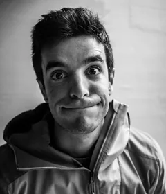
Alessandro RomelliHiverChef de course depuis 2018
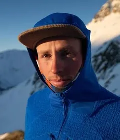
Filippo SalaÉtéChef de course depuis 2024
Luca SalzbornSeniors · Hiver · RandonnéeChef de course depuis 2018
SS
Simona SalzbornSeniorsChef de course depuis 2018
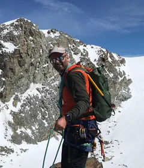
Andrea StellaÉté · HiverChef de course depuis 2017
MS
Monica StoppaniSeniors · RandonnéeChef de course depuis 2025
David StracquadanioÉté · HiverChef de course depuis 2017
AV
Alessandro ValentiÉtéChef de course depuis 2025
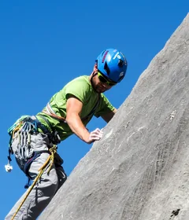
Alessio ValsangiacomoÉtéChef de course depuis 2018
SV
Sandra Valsangiacomo-ZaniniHiverChef de course depuis 2025
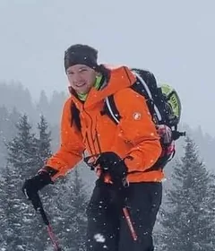
Alessandro VanoniHiverChef de course depuis 2025
HV
Hanni VanossiSeniorsChef de course depuis 2019
PG
Piergiorgio Gin VassalliSeniors · RandonnéeChef de course depuis 2017
IV
Ivan VicenziSeniors · RandonnéeChef de course depuis 2023
SW
Saskia WillemseÉté · HiverChef de course depuis 2017
MW
Martin WägliSeniorsChef de course depuis 2022
Enrico ZamboniÉté · HiverChef de course depuis 2020
Pour les chefs de course. Les courses sont publiées sur le portail Droptour ; l’aide-mémoire réunit les tâches et les procédures du chef de course.